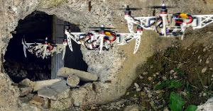

About Me
I am currently pursuing a Ph.D. in motion planning and control for Micro Aerial Vehicles, under the supervision of Prof. Davide Scaramuzza at the Robotics and Perception Group. My background is in Robotics and Control Systems, as I got a B.Sc. and a M.Sc in Automation Engineering from University of Naples “Federico II”, with focus on dynamical systems, robotics and control.
I am interested in building autonomous, intelligent machines able to navigate by themselves using only onboard sensing and computing. I believe that autonomous robots have the potential to remarkably change and improve our society. My research interests lie at the intersection between perception and action. More specifically, I am investigating techniques to exploit motion planning and control to cope with the limitations of onboard sensors for high-speed flight with small-scale, lightweight, vision-based autonomous quadrotors. Check out my publications for further details.
Drop me an email at falanga@ifi.uzh.ch if you want to get in touch, or check out my profiles on LinkedIn and Google Scholar.
Publications
Peer-reviewed Journal Papers

-

-
